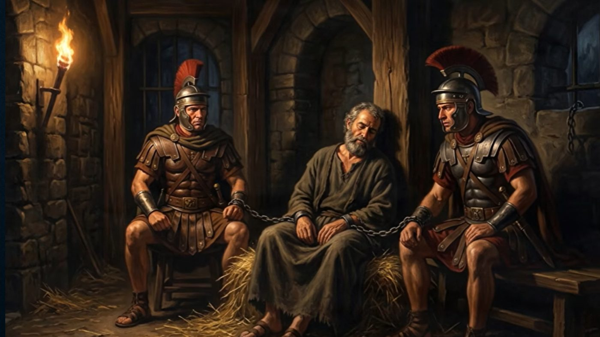

于是彼得被囚在监里，教会却为他切切地祷告神。 使徒行传 12:5
本次查经聚焦于使徒行传 12:1-19，围绕希律王逼迫教会、雅各殉道、彼得被囚以及天使搭救等事件展开。讨论涵盖三大方面：希律家族三代人的历史背景与共同特征、彼得在狱中安然入睡所反映出的属灵成长，以及由雅各之死与彼得得救之间的强烈对比所引发的深刻神学讨论——包括祷告的本质、神对每一位信徒不同的呼召，以及基督信仰与"听天由命"之间的根本区别。
历史背景：希律家族的三代人
小组梳理了希律家族三代人的脉络。大希律出现在新约的开篇——耶稣降生时，他因惧怕"新王降生"的预言，下令杀尽以色列境内两岁以下的所有男婴。希律安提帕是大希律之子，统治加利利，是杀害施洗约翰的人。希律亚基帕是大希律的孙子、希律安提帕的侄子，统治犹太地（耶路撒冷），正是本章中杀害使徒雅各、囚禁彼得的希律。
小组指出，这三代人有共同的特征：都以残暴与极端手段著称；他们的行为并非出于宗教信仰或公正的审判，而是出于政治目的——讨好犹太人以巩固自己的统治，同时向罗马皇帝表明忠诚。杀害基督徒领袖同样服务于压制潜在"叛乱势力"的政治目的，因为拥有众多追随者的领袖常被视为威胁。

经文解读：第1-7节
雅各殉道与彼得被捕
希律杀了雅各（使徒约翰的兄弟）之后，见犹太人喜悦，便进一步拘捕彼得，意图获取更大的政治声望。彼得被囚期间受到异乎寻常的严密看守：四班士兵，每班四人，共十六人轮流看守；彼得本人被两条铁链锁住，两边各有一名士兵，门口还有守卫把守。经文特别强调这种森严的戒备，是为了表明单凭人力逃脱几乎不可能，也为后来天使的搭救埋下伏笔。希律其实已经决定要在逾越节后公开处决彼得——这次囚禁本身就带着预定的死刑判决，并非一般的司法程序。
彼得在狱中安然入睡
第6节记载，彼得在被囚期间安然沉睡——此时雅各已经被杀，他也知道自己第二天可能面临同样的命运。小组认为，这一细节是彼得属灵成长的有力证明：他已不再是那个三次不认主的冲动彼得，而是对死亡与未来充满平安与信心。他的平安源自对复活的确信——他曾亲眼见过复活的耶稣，深知死亡并非终点，与主同在天上是真实的盼望。
天使的搭救
天使忽然出现，光照在牢房中，天使拍醒彼得，铁链随即从他手上脱落。彼得起初以为这是异象或梦境，直到走出监狱、来到街上，看着天使离去之后，才明白这一切都是真实发生的。
辨识两位雅各、多位马利亚与约翰马可
新约中的两位雅各
使徒雅各是使徒约翰的兄弟，十二使徒之一，也是耶稣最亲近的三位门徒之一（彼得、约翰、雅各），本章中被希律所杀——是十二使徒中第一位殉道者。耶稣的兄弟雅各并非十二使徒之一，但后来成为初代教会的重要柱石，并写下了《雅各书》。
十二使徒的殉道
十二使徒中，有十一位殉道而死，唯有使徒约翰是例外——他被放逐到拔摩岛（在那里写下《启示录》），最终以近百岁高龄自然离世。雅各是十二使徒中第一位殉道者；约翰则是最后离世的，且是自然辞世——这对兄弟的结局形成了鲜明的对比。
约翰马可的身份
获救之后，彼得前往"称呼马可的约翰"之母马利亚家中。这个人并非十二使徒之一，而是保罗事工中的助手，也是《马可福音》的作者。"马利亚"这个名字在圣经中多次出现。路加（使徒行传的作者）身兼医生与历史学家，写作风格严谨，特意注明"约翰马可之母"以清楚指明具体人物，避免混淆。在彼得的时代，人们因常在那里聚会，对这一描述十分清楚；但对现代读者而言，确实容易产生混淆。
神学核心：祷告的本质
雅各之死与彼得得救的对比所引发的问题
教会为这两个人同样恳切地祷告，结果却截然不同：雅各被杀，彼得得救。这引出一个深刻的问题：难道神更偏爱彼得吗？为什么不救雅各？
祷告不是操控神
祷告的目的并不是用我们的诉求去操控神，强迫祂按照我们所期待的结果行事。祷告是一种依靠神、亲近神的方式——藉着祷告，我们将主权交托给神，顺服祂的旨意与决定。祷告改变的是我们自己，使我们与神的旨意对齐，赐给我们更深的平安与信心，而不是改变神的决定。
神对每一位信徒有不同的呼召
雅各在世上的使命已经完成，神接他回天家；对基督徒而言，死亡并非终点，而是进入天堂与神同在。彼得的使命尚未完成——神仍需要他继续扶持教会、担当领袖的角色，所以差遣天使来搭救他。小组总结出一个原则：信徒不应彼此比较——"为什么神总是应允他的祷告，却不应允我的？"——每个人都有神独特的旨意与呼召。
最深层的祷告
我们可以为医治、保护、拯救而祷告，这些都是合理的祈求；但最深层的祷告是："主啊，愿祢的旨意成就，愿祢藉着祢的仆人得荣耀。"耶稣在客西马尼园的祷告便是最好的典范："父啊，你若愿意，就把这杯撤去；然而不要成就我的意思，只要成就你的意思。"祷告时，我们可以表达自己的心愿（例如为某人的医治祷告），但必须加上"照祢的旨意，而非我的意思"。
基督信仰与"听天由命"的本质区别
这是讨论中一个重要的神学区分，由朱博士的提问引出。"听天由命"预设命运是不可知、不可控的，人只能被动接受——这种立场接近无神论或不可知论。相较之下，基督徒的祷告建立在以下前提之上：
- 神是全知、全能、满有慈爱的。
- 祂比我们更清楚什么才是真正对我们有益的。
- 祂掌管全局，如同一位熟知整个剧本的导演。
因此，基督徒的祷告是主动的信靠与顺服，而非被动的听天由命。使徒保罗的经历印证了这一点：他清楚知道自己将要在罗马皇帝面前作见证，圣灵引导他前往马其顿（欧洲）而非亚细亚传福音——这表明信徒并非对神的旨意一无所知，而是随着与神关系的加深，愈发能够分辨神的引导。耶稣自己也曾有人性的软弱，祈求神将苦难之杯撤去，但祂始终将主权交托给天父——这正是成熟信仰的典范。
小组将这描述为一个信心成长的过程：我们越是祷告、亲近神，就越能明白祂的旨意——这是一个渐进的成长过程，如同孩童从婴孩长成大人。许多基督徒虽然已经信主，却缺乏对永生与天堂的真实感受，这会影响他们在苦难中信心的根基——对天堂真实性的确信，是信仰的重要根基。
教会祷告与彼得归来中饶有趣味的细节
获救之后，彼得来到马利亚家门前敲门。使女罗大听出彼得的声音，欢喜到忘记开门，转身跑进去报信，把彼得独自留在门外。众人听到消息，起初并不相信，以为"必是他的天使"，而不是彼得本人。小组认为这一细节发人深省：教会正恳切地为彼得祷告，神应允了祷告，彼得也确实出现了，众人却不敢相信——这反映出即便是初代教会的信徒，在祷告的信心上也存在局限。
小组讨论了"彼得的天使"这一说法的两种理解：一种理解认为彼得有个人的守护天使，天使以他的形象显现（这是犹太传统中的一种信仰）；另一种理解认为，众人以为彼得已经死了，所显现的是死后以他形象显现的灵。路加在此只是客观记录当时人们的想法，并未在神学上肯定或否定"人人都有守护天使"这一概念——这并非使徒行传所强调的核心教义。
希律的结局与士兵被处决
天亮之后，士兵们发现彼得不见了，无法向希律交代。希律审问看守之后，下令将他们全部处死。小组指出，这一结局进一步显明了希律家族残暴的本性，也表明彼得的获救，完全是人的逻辑所无法解释的。